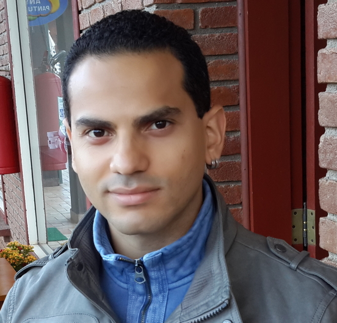

Luiz Felipe Pereira

Data de Nascimento: 19/03/1992.
Nacionalidade: Brasileiro, Estado Civil: Solteiro.
Cidade: Pouso Alegre – Minas Gerais.
Endereço: Rua Manoel Matias 305, Primavera.
Telefone Residencial: (35) 3423 - 7107 Celular: (35) 9139 - 4272.
E-mail: felipepwned@hotmail.com.
Carteira de Habilitação: AB.
Objetivo
- Cargo: Área da Tecnologia da Informação (TI).
- Suprir as expectativas da empresa empenhando um trabalho sério e dinâmico
desenvolvendo minhas atividades profissionais com responsabilidade e com
dedicação contribuindo com o crescimento da empresa.
Formação
- Bacharel em Ciências da Computação pela Pontifícia Universidade Católica de
Minas Gerais - Poços de Caldas. (02/2010 – 12/2013).
- Estudando Pós Graduação em Desenvolvimento de Aplicações para
Dispositivos Móveis e Cloud Computing no Inatel (Instituto Nacional de
Telecomunicações). (Inicio: 02/2015).
Experiência Profissional
- Atual (Inicio: 21/03/2014) – R.S. Automação Comercial LTDA.
Cargo: Analista de Suporte.
Principais Atividades: Suporte aos clientes sobre duvidas referentes ao sistema
ERP da empresa, Manutenção e Treinamento do sistema para clientes.
- 2013-2014 – Projeto de Extensão de Inclusão Digital para 3° Idade
em PUC Minas Poços de Caldas.
Cargo: Professor / Monitor.
Principais Atividades: Elaboração e Aplicação das Aulas, monitoramento dos
alunos.
- 2012-2013 – Estágio no Laboratório de Televisão Digital Interativa
em PUC Minas Poços de Caldas.
Cargo: Desenvolvedor.
Principais Atividades: Elaboração e Desenvolvimento de uma Aplicação para
Televisão Digital Interativa.
Qualificacões
- Inglês – Intermediário (Spectrum line, 5 anos e 5 meses (2004 - 2009).
- Minicurso de Montagem de Computadores (10 horas), Programação
Orientada a Objeto (10 horas), Virtualização (10 horas), Desenvolvimento de
Aplicações Ricas Usando a Plataforma JavaFX (10 horas), Automação de
Tarefas Utilizando Linux / Shell Script (20 horas). Todos Minicursos realizados
na PUC Minas Poços de Caldas.